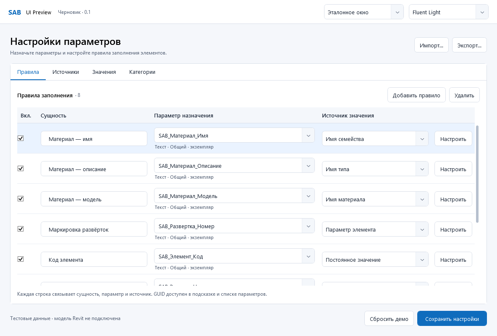
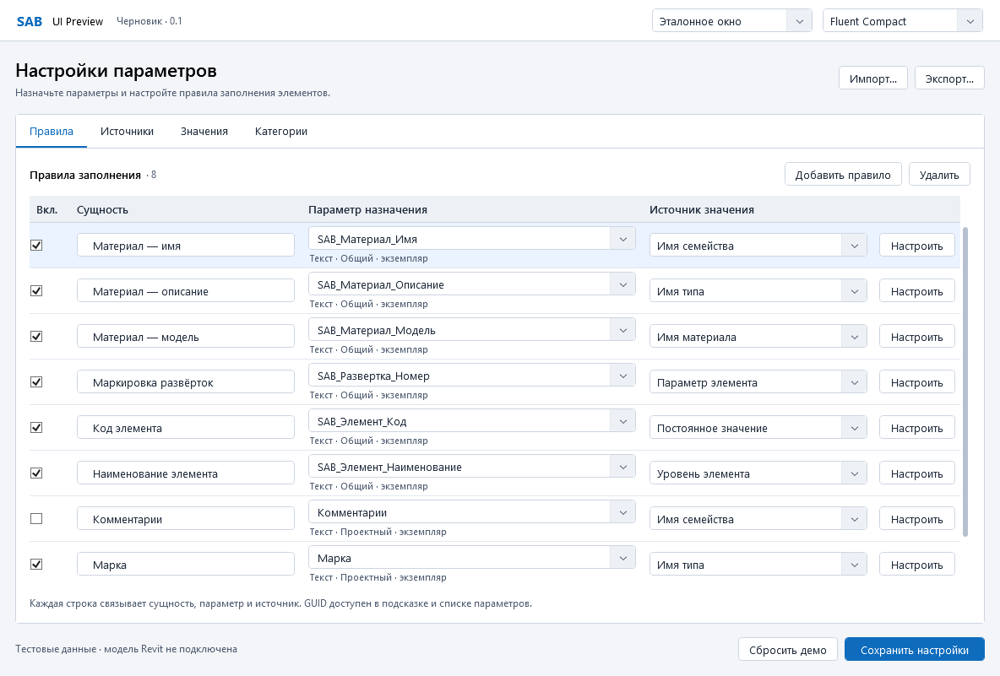
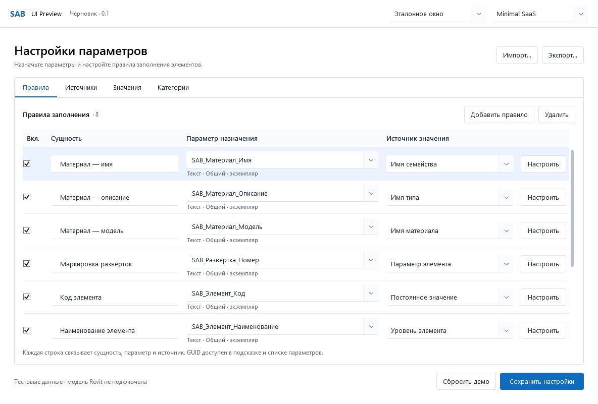
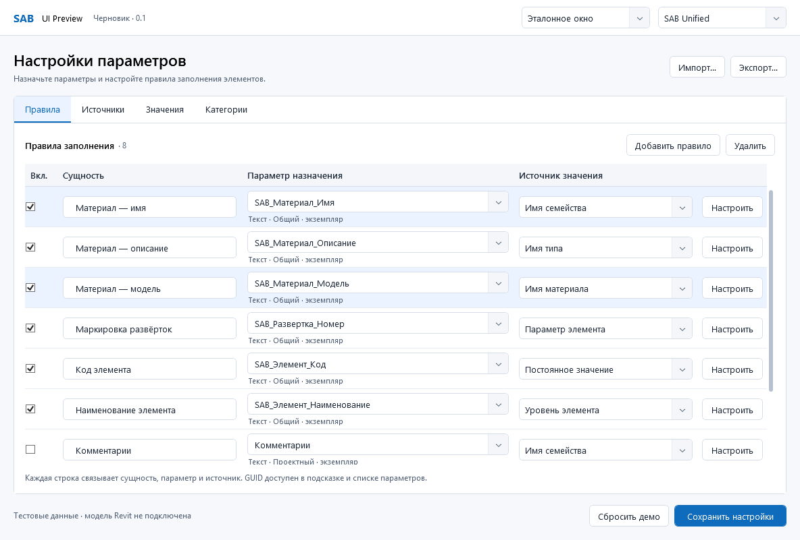

SAB — четыре варианта одного окна
Черновик 0.1 · 11.10.2026 · ожидает одного выбора. Все изображения — реальный WPF-рендер, одинаковые тестовые данные. Рабочее окно SAB не изменено.
Предлагается SAB Unified: современный светлый Windows UI, умеренная плотность и чистая иерархия. Ниже три исходные концепции и объединённый вариант в равном размере. Клик по снимку открывает оригинал.
Fluent Light
Поле / строка: 36 / 72 DIP · Больше воздуха и спокойное чтение. Меньше видимых строк.

Fluent Compact
Поле / строка: 28 / 54 DIP · Больше строк на экране. Плотнее составные редакторы.

Minimal SaaS
Поле / строка: 34 / 66 DIP · Белая композиция, поля с нижней линией. Границы ввода менее явные.

SAB Unified
Поле / строка: 32 / 60 DIP · Рекомендуемый баланс: ясные поля, компактность и спокойная таблица.
